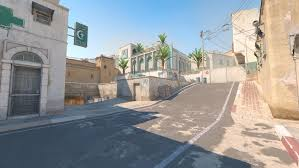
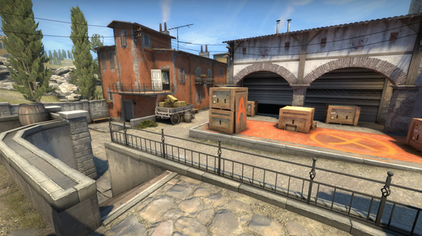

Топ команд (приклад)
Таблиця нижче демонструє рейтинги команд. Дані навчальні, для прикладу. Повернутись на головну або перейти до карт.
| # | Команда | Показники сезону | Мапа | |||
|---|---|---|---|---|---|---|
| Рейтинг | Очки | Серія | Best map | Winrate | ||
| 1 | NAVI | 1.00 | 980 | W5 | Mirage | 62% |
| 2 | FaZe | 0.94 | 910 | W3 | Inferno | 60% |
| 3 | G2 | 0.90 | 875 | L1 | Nuke | 58% |
| A | Vitality | 0.86 | 840 | W2 | Overpass | 57% |
| Spirit | 0.82 | 810 | W1 | Dust II | 55% | |
| Примітка: значення умовні. Для реальних рейтингів можна використати посилання: HLTV Team Rankings. | ||||||
Топ карт (таблиця 3×4)
| Dust II | Mirage | Inferno | Nuke |
|---|---|---|---|
|  |

|
 | |
| Детальніше | Детальніше | Детальніше | Детальніше |
| Класична карта з простими таймінгами та зрозумілими позиціями. | Одна з найпопулярніших карт для командної гри та контролю мідлу. | Карта з “вузькими” проходами, важлива робота з гранатами. | Дворівнева карта з великою роллю ротацій та інформації. |
Повернутись до рейтингу команд або переглянути галерею карт.